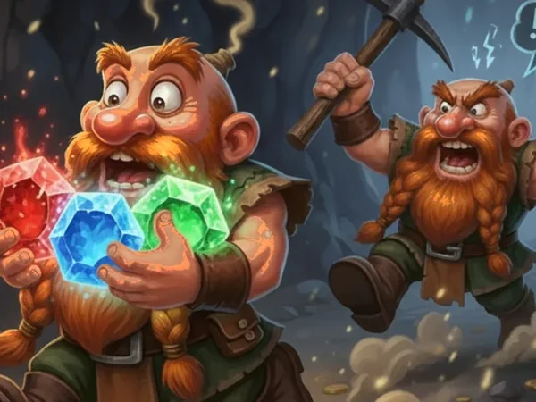

跳到正文
Intrecci di Carta
ZH
English
Italiano
Français
Deutsch
Español
中文
可读的故事，可玩的故事
选一张牌吧。
小说与推理小说、游戏书、童书、纸牌游戏和电子游戏。全部由 Intrecci di Carta 在瑞士制作。
Pierpalmiro Stroppa 著
图书
小说与推理小说：惊悚、反乌托邦、奇幻，以及亚卡里诺准尉的探案。
进入 →
Peter Palmer 著
游戏书
穿行于希腊、北欧与埃及神话的分岔冒险，由你做主。
进入 →
Penelope Starwood 著
童书
适合睡前大声朗读的绘本。
进入 →

洗牌。抽牌。背叛。
纸牌游戏
适合朋友聚会的桌面纸牌游戏。
进入 →
像编织故事一样编织游戏。
电子游戏
安卓游戏，即将登陆 Google Play。
进入 →
 Intrecci di Carta
Intrecci di Carta